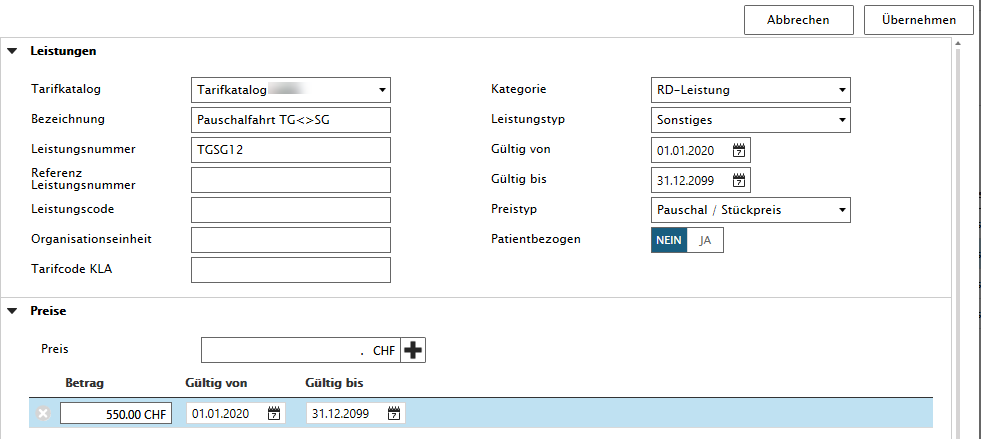
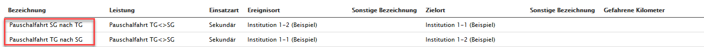
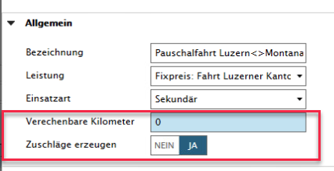

Pauschalfahrt administrieren
Mit der Lizenz 'Pauschalfahrt' kann der User mit der Rolle 'Stammdatenverwaltung' verschiedene Fahrten im Sekundär-Bereich, die sich immer wiederholen, in den Stammdaten hinterlegen.
Der User mit der Rolle 'Stammdatenverwaltung' definiert vorab die Leistung mit Preis für Hin-/Rückfahrt.

In einem weiteren Schritt bei 'Pauschalfahrten' den Hin- und Rückweg der eben erstellten Leistung erfassen.


Die Anwendung der Pauschalfahrten ist wie folgt dokumentiert: Pauschalfahrten auswählen
Zuschläge erzeugen
Nur in ZHBase, ZSBase und SRO implementiert. Bei allen anderen Kunden ist dieser Boolean ausgeblendet.
Mittels dem Boolean 'Zuschläge erzeugen' JA/NEIN kann explizit definiert werden, dass zu einer Pauschale Zuschläge (Nacht, Sa/So/Feiertag) und 'Kilometer' angewendet werden.
Zusätzlich können Sie bei 'Zuschläge erzeugen' nur die Zuschläge für Nacht/Sa-/So-/Feiertage generieren und die Kilometer nicht, indem der 'Verrechenbare Kilometer' auf 0 gesetzt wird.
